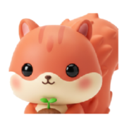
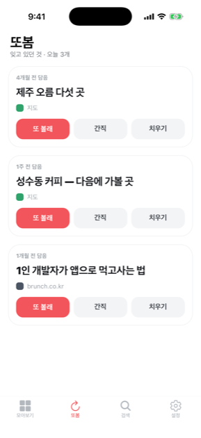
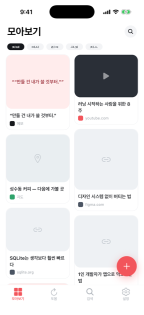
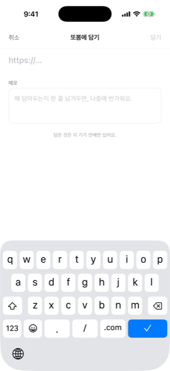
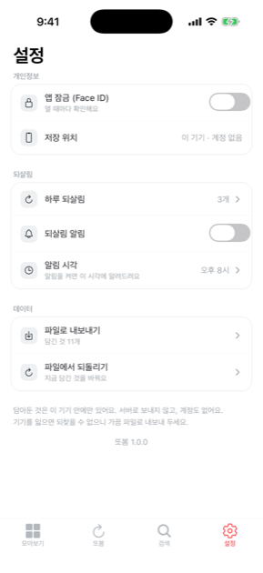

또봄북마크 300개, 나중에 볼 영상 40개, 어딘가 적어둔 문장들. 담을 때는 분명 좋았는데, 담는 순간 잊습니다. 폴더를 더 만들어도 같습니다 — 문제는 정리가 아니라 다시 꺼내는 일이 아무도 하지 않는 일이라는 데 있으니까요.
담은 지 오래됐고, 한동안 안 봤고, 아직 몇 번 안 떠오른 것. 그런 것부터 하루에 몇 개씩 골라 보여줍니다. 전부 기기 안에서 계산합니다.
어느 앱에서든 공유시트로 또봄에. 제목과 미리보기는 알아서 가져옵니다.
폴더도 태그도 강요하지 않습니다. 담고 잊어버려도 됩니다.
오늘의 몇 개를 꺼내 보여줍니다. 또 볼래 · 간직 · 치우기.
담아둔 것이 모이고, 잊을 때쯤 다시 올라옵니다.




무엇을 담는지는 꽤 사적인 기록입니다. 그래서 아예 받지 않기로 했습니다.